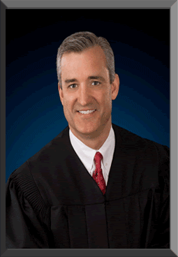

Department 15
Chief Judge
Honorable
David A. Hardy
(775)328-3880
Judicial Assistant: Shannon Parke - shannon.parke@washoecourts.us (775)328-3880
Court Reporter: Randi Walker - randi-walker@att.net (775)742-2544

CLICK HERE TO VIEW CALENDAR SETTINGS FOR A PARTICULAR CASE ON A PARTICULAR DAY. (THIS WILL OPEN A NEW WINDOW AND TAKE YOU TO CASE INQUIRY).Biography
Chief Judge David Hardy is a fifth-generation Nevadan whose progenitors settled the Virgin Valley in the 1870s. He was appointed to the District Court, Family Division, in January, 2005, and elected without opposition to the general jurisdiction Department 15 in 2010. Prior to his appointment to the bench, Judge Hardy was a partner in the Law Firm of Hardy & Woodman. Judge Hardy has been married since 1986 and is the father of three children.
Judge Hardy enlisted in the U.S. Army after high school and served in a variety of locations and capacities, to include active service in Korea and reserve Airborne service in the 19th Group Special Forces, Utah National Guard. Judge Hardy graduated from Brigham Young University, magna cum laude, and with honors from Brigham Young University Law School where he served as managing editor of the BYU Law Review. Judge Hardy clerked for the Nevada Supreme Court before entering private practice, and returned to the Nevada Supreme Court as a principal staff attorney between 1996 and 1999. Judge Hardy's judicial and legal experience include the following:
Graduated with a Master's Degree in Judicial Studies from the University of Nevada in 2008. Presently a Judicial Studies Ph.D. student at the University of Nevada (preliminary dissertation topic: Nevada Territorial Supreme Court: A Transitional Influence from Frontier Lawlessness to Statehood).
Served on numerous commissions and boards, such as the Supreme Court Article 6 Commission, Nevada Judicial Code Commission, Standing Committee on Judicial Ethics and Election Practices, Judicial Performance Evaluation Subcommittee, Board of Trustees, Nevada District Judges Association, Washoe County Law Library Board of Trustees, Executive Council, Family Law Section (Nevada State Bar), Executive Council, Elder Law Section (Nevada State Bar), CLE Publications Planning Committee (Nevada State Bar), CASA Advisory Board, Board of Directors, Special Advocates for Elders (SAFE), and Community Advisory Board for the University of Nevada, Reno, Sanford Center for Aging.
Authored several articles, including Nevada Alimony: An Important Policy in Need of a Coherent Policy Purpose, 9 Nev. L. J. 325 (2009); Who is Guarding the Guardians? A Localized Call for Improved Guardianship Systems and Monitoring, 4 NAELA Journal 1 (2008)(winner of the 2009 NAELA John J. Regan Writing Award for best original article of the year); We the People: The Citizens and the Constitution, Nevada Lawyer 24 (April 2009); Nevada Unified Family Court: Nevada Family Court System is Committed to Families, Nevada Lawyer 14 (August, 2008); Media Access to Nevada Judicial Proceedings, Washoe County Writ 8 (January, 2008); Nevada Registry of Advance Directives for Health Care, Washoe County Writ 10 (June, 2008); Conversion From Chapter 13 to Chapter 7 of the Bankruptcy Code: What Constitutes Property of the Post-Conversion Estate? 1992 B.Y.U. L. Rev. 1105, numerous professional education materials, and more than 50 essays on judicial ethics published in the Washoe County Writ.
Chief Judge, Second Judicial District Court. 2012 - present. Presiding Judge, Family Division, Second Judicial District Court. 2008 - 2010. Frequent lecturer and presenter, focusing primarily on elder law and judicial ethics. Certified as an elder law attorney by the National Elder Law Foundation (approved by the Nevada State Bar and American Bar Association's Standing Committee on Specialization). Provided substantial pro bono services for the Washoe County Senior Law Project, Washoe County Public Guardian, and Sierra Regional Center. Received the 2002 Pro Bono Award from the Washoe County Senior Law Project and his law firm was named 2002 Pro Bono Law Firm of the Year by the Washoe County Access to Justice Foundation. Appointed by the Reno City Council to the Northwest Neighborhood Advisory Board (1994-2000) and Reno Board of Adjustments (2000-2005).
Calendar Information for the next 14 days
| Start Time | Case Number & Description | Event Description | Oct-20-2014 |
| 1. 09:13 AM | CV14-02238 - IN RE: AKENATEN BLUEHOURSE (D15) | Request for Submission |
| 2. 09:49 AM | CR14-0695 - STATE VS. CHARLES BURKE WHOLEY (TN) (D15) | Request for Submission | Oct-23-2014 |
| 3. 09:30 AM | CR14-1260 - STATE VS. ROSS ELLIOT JOHNSON (D15) | SENTENCING |
| 4. 09:30 AM | CR14-0695 - STATE VS. CHARLES BURKE WHOLEY (TN) (D15) | MOTION TO CONFIRM TRIAL |
| 5. 09:30 AM | CR14-1233 - STATE VS. TIMOTHY HERMAN ROGERS (D15) | SENTENCING |
| 6. 09:30 AM | CR14-1542 - STATE VS. DOUGLAS STEVEN REYNOLDS (D15) | ARRAIGNMENT | Oct-28-2014 |
| 7. 09:00 AM | CR14-1034 - STATE VS. SAL AUDITORE (D15) | ARRAIGNMENT |
| 8. 09:00 AM | CR14-0960 - STATE VS. JASON MICHAEL FISHER (D15) | SENTENCING |
| 9. 09:00 AM | CR14-1589 - STATE VS. TRAVIS ANTHONY PAIGE (D15) | ARRAIGNMENT |
| 10. 09:00 AM | CR14-1577 - STATE VS. ZACHARY TYLER SMITH (D15) | ARRAIGNMENT |
| 11. 09:00 AM | CV14-02010 - IN RE: ERIC BERNARD ROBINSON (D15) | REPORT PSYCHIATRIC EVALUATION |
| 12. 09:00 AM | CR12-1347 - STATE VS ALEXANDER WEAKLEY-DIAZ (DC) | SENTENCING |
| 13. 09:00 AM | CR14-0982 - STATE VS CHRISTOPHER JAMES MCMANUS (D15) | ARRAIGNMENT |
| 14. 09:00 AM | CR13-1819 - STATE VS. DUSTIN ELLIS (D15) | SENTENCING |
| 15. 09:00 AM | CR13-0474 - STATE VS. MARSHALL SCOTT LADD (D15) | SENTENCING |
| 16. 09:00 AM | CR14-1580 - STATE VS. ANGEL LYNNE SANDERS (15) | ARRAIGNMENT |
| 17. 09:00 AM | CR14-0155 - STATE VS. JERRY LAFAYETTE BROWN, JR. (D15) | MOTION TO CONFIRM TRIAL |
| 18. 09:00 AM | CR13-2082 - STATE VS. DERRICK LAMONT BARNETT (D15) | SENTENCING |
| 19. 09:00 AM | CR14-1279 - STATE VS. NATALIE MARIE LOPEZ (TN) (D15) | SENTENCING | Oct-29-2014 |
| 20. 16:00 PM | CV13-00429 - LEGEND TRAIL HOMEOWNERS V. LEGEND INVESTMENT (D15) | STATUS CONFERENCE | Oct-30-2014 |
| 21. 09:00 AM | CR14-1603 - STATE VS. MARCOS IVAN GARCIA (D15) | ARRAIGNMENT |
| 22. 09:00 AM | CR14-1351 - STATE VS. REBECCA MARIE HOUDYSHELL (D15) | SENTENCING |
| 23. 09:00 AM | CR14-1330 - STATE VS. SHANA MARIE REPETTO (D15) | SENTENCING |
| 24. 09:00 AM | CV14-02088 - IN RE: TRAMAINE VONTE MONTGOMERY (D15) | REPORT PSYCHIATRIC EVALUATION |
| 25. 09:00 AM | CR13-0598 - STATE VS. LAURA KATHLEEN REYNOLDS (D15) | ENTRY OF PLEA |
| 26. 09:00 AM | CR14-1429 - STATE VS. THOMAS ABNER CRAINE (D15) | ARRAIGNMENT |
| 27. 09:00 AM | CR14-1361 - STATE VS. ASHLEY KELLY (D15) | SENTENCING |
| 28. 09:00 AM | CR14-0833 - STATE VS. WILLIAM MATTHEW ALLEN (TN) (D15) | SENTENCING |
| 29. 09:00 AM | CR14-1364 - STATE VS. STEWART JOSE OTERO (D15) | SENTENCING |
| 30. 09:00 AM | CR14-1610 - STATE VS. GIBRAN RODRIGUEZ (D15) | ARRAIGNMENT |
| 31. 09:00 AM | CR14-1347 - STATE VS. JONATHAN SARTOR (D15) | SENTENCING |
| 32. 09:00 AM | CR14-1309 - STATE VS. DANIEL LOUIS ALLEN (D15) | SENTENCING |
| 33. 11:00 AM | CV14-00662 - GLEN ALLEN MEYERS VS. ALVARO H. DEVIA, M.D. (D15) | CASE MANAGEMENT CONFERENCE | Nov-03-2014 |
| 34. 09:00 AM | CR14-0695 - STATE VS. CHARLES BURKE WHOLEY (TN) (D15) | TRIAL - JURY |
| 35. 16:00 PM | CV14-00824 - STEVEN DAIKER ETAL VS. LAKEMONT GRANITE ETAL (D15 | CASE MANAGEMENT CONFERENCE |
Calendar Information for the next 14 days
| Start Time | Case Number & Description | Event Description |